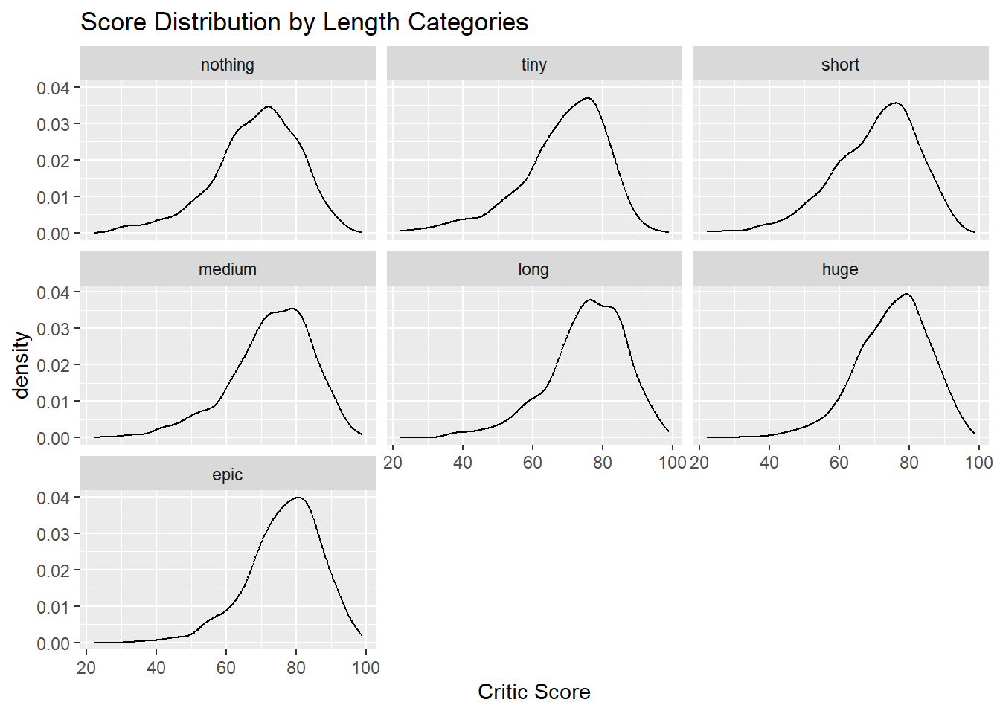
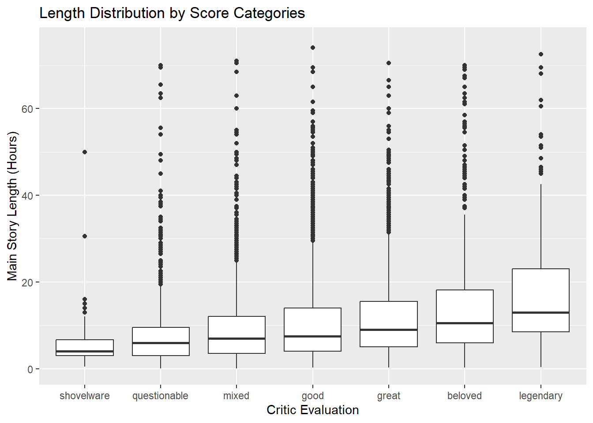

The first Assassin’s Creed game was released in 2007, and since has become a flagship title for Ubisoft, the publishers of the game. In order to complete the main story and extra content of the game, it’s estimated that it would take you 20 hours total, which was typical of games then. Fast forward 13 years later, and 2020’s Assassin’s Creed: Valhalla’s main story and side missions are estimated to take a total of 100 hours. When released, Valhalla was a notable outlier for its massive time to beat. But while most games don’t strive to be that long, trends in gaming have made it so a long time to beat is a prized ideal for some developers. However, this strive to make the game with the most content possible comes at a cost. The price of game development has only gotten higher with time, and most companies cannot afford to pack a product with such a high amount of unique content. But neither did Assassin’s Creed Valhalla! A growing issue in the modern video game market is to have games released with around 20 hours of original unique content, and have the rest of the playtime be taken up with the same missions, assets, and content slightly copied and pasted somewhere else.
0.3 Research Question
Depending on where you get your video game reviews from, it may not be apparent just how much bloat a game might be filled with. Alongside it, some reviewers may simply look at the playtime without considering how much of it is unique, causing this bloat to go unseen. Every gamer has their own preferences on how long they like their games to be, but so does every reviewer. In hopes of painting a fuller picture of this subject, we took data from Howlongtobeat and Metacritic in order to answer our research question: do longer video games get better review scores?
0.4 Background
For more context on our chosen sources…
0.4.1 Howlongtobeat
Howlongtobeat is a video game cataloging service that, unsurprisingly, tracks how long a video game is to beat. One problem about measuring playtime is that each person completes games at their own speed, so using a service like Howlongtobeat allows us to get a much more accurate average based on user submissions than one person giving their feedback.
0.4.2 Metacritic
Metacritic is a aggregate review site for Movies, Music, TV, and critically, Video Games. Instead of hosting their own reviews, the sole purpose of Metacritic is to create a hub where every reviewer’s score resides, creating a highly utilized value in game discourse: the Metascore (essentially just a weighted average). Among that score, there are two values to take note of: The critic score is a 0 <-> 100 value that averages the scores of review outlet ratings of a title, and the user score, a 0 <-> 10 value that averages the reviews left by Metacritic users.
0.5 Data
For our project we joined 2 Kaggle datasets: one for Howlongtobeat times, and one for Metacritic scores. For Howlongtobeat, the dataset was collected by Kasumil5x in 2020 by scraping the official HLTB website. The dataset contained more information than we needed; Alongside with the Title and Main Story playtime, it also contained the developers, whether it was an expansion, and a multitude of other playtimes that weren’t applicable to our project (how long it would take to 100% comple a game, and how long a co-op mode would take to complete (if it was included)). Our Metacritic dataset was made by Deep Contractor in 2022, by scraping directly from the Metacritic website. Alongside game title, user score, and critic score, the dataset also included which gaming platform it was released for, a summary of the game, and the release date. That last value (with a little wrangling) became a very helpful way of comparing how playtimes have changed over time. With a simple inner_join by name and an extra mutate variable for yearly review averages, our dataset was ready!
library(tidyverse)
Warning: package 'ggplot2' was built under R version 4.4.3
Warning: package 'purrr' was built under R version 4.4.3
── Attaching core tidyverse packages ──────────────────────── tidyverse 2.0.0 ──
✔ dplyr 1.1.4 ✔ readr 2.1.5
✔ forcats 1.0.0 ✔ stringr 1.5.1
✔ ggplot2 3.5.2 ✔ tibble 3.2.1
✔ lubridate 1.9.4 ✔ tidyr 1.3.1
✔ purrr 1.0.4
── Conflicts ────────────────────────────────────────── tidyverse_conflicts() ──
✖ dplyr::filter() masks stats::filter()
✖ dplyr::lag() masks stats::lag()
ℹ Use the conflicted package (<http://conflicted.r-lib.org/>) to force all conflicts to become errors
library(scales)
Warning: package 'scales' was built under R version 4.4.3
Attaching package: 'scales'
The following object is masked from 'package:purrr':
discard
The following object is masked from 'package:readr':
col_factor
Rows: 795683 Columns: 4
── Column specification ────────────────────────────────────────────────────────
Delimiter: ","
chr (3): type, platform, time
dbl (1): id
ℹ Use `spec()` to retrieve the full column specification for this data.
ℹ Specify the column types or set `show_col_types = FALSE` to quiet this message.
games <-read_csv("data//games.csv")
Rows: 35922 Columns: 16
── Column specification ────────────────────────────────────────────────────────
Delimiter: ","
chr (6): title, type, developers, publishers, platforms, genres
dbl (7): id, main_story, main_plus_extras, completionist, all_styles, coop,...
date (3): release_na, release_eu, release_jp
ℹ Use `spec()` to retrieve the full column specification for this data.
ℹ Specify the column types or set `show_col_types = FALSE` to quiet this message.
Warning in inner_join(metac, realgames): Detected an unexpected many-to-many relationship between `x` and `y`.
ℹ Row 13617 of `x` matches multiple rows in `y`.
ℹ Row 3596 of `y` matches multiple rows in `x`.
ℹ If a many-to-many relationship is expected, set `relationship =
"many-to-many"` to silence this warning.
Warning: There was 1 warning in `mutate()`.
ℹ In argument: `user_review = as.integer(user_review)`.
Caused by warning:
! NAs introduced by coercion
#joins based on name of game and wrangles some values to be functionalUSETHISONE <- palala[!duplicated(palala$name), ]#excludes duplicates
0.6 Data Insights
In pursuit of a better understanding of the data, we started by graphing all points in a simple plot, where Metascore was represented on the y-axis, and average time to beat the main story represented on the x. Note that the range of x is always constricted in our visualizations because of the presence of outliers reaching as far as 248 hours to beat on average.
USETHISONE |>filter(main_story <100) |>ggplot(aes(x = main_story, y = meta_score)) +geom_point(size =0.6) +labs(x ="Main Story Length", y ="Metascore", title ="Metacritic Score vs Amount of Time to Complete Main Story")
However, it soon became clear that this type of plot was not expedient to our understanding of the data. This is because of the density, number, and clustering of the data points, which meant that certain points overlapped too closely to be discernably different. To this end, we regraphed the data using geom_bin_2d, which creates rectangular regions on a plot which are colored based on how many points fall within the box.
USETHISONE |>filter(main_story <50) |>ggplot(aes(main_story, meta_score )) +geom_bin_2d( binwidth =c(0.5,1)) +scale_fill_distiller(palette="YlGnBu", name ="# Games") +labs(y="Critic Score", x="Main Story Length (Hours)", title="Score vs. Main Story Length")
This gives a clearer picture of the basic rundown of the data but does not contradict the most evident observation from our first visualization: that the only really underrepresented quadrant is that of “bad long games”. That is, it is very clear that there are plenty of short games that are rated all sorts of scores: the Metacritic aggregate review score of games under 5 hours range anywhere from the twenties to the nineties. However, among games longer than, say, 50 hours, there are much fewer games with review scores lower than 60. In fact, we can even draw a sort of line (that somewhat resembles the graph of a square root of x) In search of answers, we created category factors to compare the densities using bivariate visualizations and methods we were familiar with, like faceted density plots and box plots. We created a factor categorizing time into “Nothing” (a main story of less than two hours), “Tiny” (a main story of between 2 and 4 hours), “Small” (a main story of between 4 and 7 hours), “Medium” (a main story of between 7 and 10 hours), “Long” (a main story of between 10 and 14 hours), “Huge” (a main story of between 14 to 25 hours), and “Epic” (a main story of longer than 25 hours). This was mostly based on the standard distributions of game lengths (show screenshot) and subjective ratings. Note that NA values had to be excluded here to properly define the factor. Similarly, subjective ratings informed how the Metacritic aggregate scores were categorized, where games below 40 Meta Score were labeled “Shovelware” (Gamer slang for a poorly made game that is “shoveled out” of a production house like dung), games between 40 and 60 Meta Score were labeled “Questionable”, games between 60 and 70 Meta Score were labeled “Mixed”, games between 70 and 78 Meta Score were labeled “Good”, games between 78 and 84 Meta Score were labeled “Great”, games between 84 and 90 Meta score were labeled “Beloved”, and games above 90 Meta Score were labeled “Legendary”.
The subjective rating was, in this case, systematic: data was surveyed and associated with the researcher’s knowledge of how certain games are generally regarded. Attention must also be paid to the wide range of the “Legendary” category: above a certain threshold, very high ratings are rare, and are fairly subjective, especially because of the aggregate nature of scores. This means this section all really melts together.
Using these categories, we were able to construct bivariate box and density plots to show the relative frequencies of lengths or score in the corresponding categories of score or length.
withcats |>ggplot(aes(y = meta_score, x=main_cat)) +geom_boxplot() +labs(y="Critic Score", x="Main Story Length", title="Score Distribution by Length Categories")
withcats |>ggplot(aes(x = meta_score)) +geom_density() +facet_wrap(~ main_cat) +labs(x="Critic Score", title="Score Distribution by Length Categories")

#distribution graphs based on length categories vs scores
withcats |>ggplot(aes(y = main_story, x=meta_cat)) +geom_boxplot() +labs(x="Critic Evaluation", y="Main Story Length (Hours)", title="Length Distribution by Score Categories") +scale_y_continuous(limits =c(0,75))
Warning: Removed 31 rows containing non-finite outside the scale range
(`stat_boxplot()`).

withcats |>ggplot(aes(x = main_story)) +geom_density(fill="gold", alpha=0.5) +facet_wrap(~ meta_cat) +scale_x_continuous(limits =c(0,25)) +labs(x="Main Story Length (Hours)", title="Length Distribution by Score Categories")
Warning: Removed 672 rows containing non-finite outside the scale range
(`stat_density()`).
#distribution graphs based on length vs score categories
Arranged by length categories, visualization shows a possible gentle trend of increased review scores among longer games, but this is generally unconvincing, particularly judging by the large overlap in scores between length categories. This can be attributed particularly to score levelling on Metacritic: so many scores are in the range of around 80 Metascore that it’s very difficult to compare them by length.
On the other hand, when arranged into categories by score, it is easier to see trends of total game-time among the extremities of low and high scores. The box plot, particularly, shows how the 3rd quartile of length grows higher among better-rated games. This is particularly true among the very-best regarded games, which we termed “legendary”. This does not, though, restrict the 1st quartile of better games as much as might be expected: again, the difference between “beloved” and “legendary” games is markedly more significant for the 3rd than the 1st quartile of lengths. We also see the relative rarity of longer games of exceptionally poor regard (those we referred to as “shovelware” earlier): while most quality categories have healthy bundles of outliers above outside of their most common ranges, “shovelware” is restricted to a scarce few, with a tight deviation hovering somewhere around an average length of ~5 hours.
This data collectively points to the fact that, while shorter games can vary in quality, and indeed there are very well regarded short games, there are very few longer games that are afforded the sort of universal disrepute which lands one in the bottom two-fifths of Metacritic’s scoring system.
0.7 Conclusions and Potential Explanations
This takeaway, that games do not necessarily need to be long to be loved, but those that are hated are scarcely long, while contrasting with the initial ideas underlying this investigation, are not particularly surprising. What it does make very clear is that an impetus to make games long in order to improve them is completely unnecessary, as we say many examples of well rated games of shorter length.
On the other hand, why the worst regarded games were restricted mostly to short lengths could be due to several factors. Most longer games require a larger budget, longer development time, and more care to be put into construction. While these aspects do not always lead to a more enjoyable game, a certain amount of them are usually necessary for a game to be functional and coherent. Aforementioned “Shovelware” has a reputation of lacking these resources which would be required to develop a longer game. Furthermore, there is a baseline level of enjoyment and respect that one both needs and develops to finish a game longer than, say, 10, 15 hours. Finishing a game of this length often lets someone at least adjust to the games quirks, changing their opinion of the game.
Outliers to what we called the “zone of relative exclusion” (the lack of longer games of poor quality) included titles such as “7 Days to Die”, a survival game in continuous development since 2013, with a 1.0 releasing in 2024. Because of the open-ended and unfinished nature of the gameplay, length may be difficult to rate for users of howlongtobeat, and playtime is extending using randomly generated content
0.8 Limitations and Avenues for Further Research
The data used in this project is 3 to 5 years old, and surely much has changed in the industry in this time; even comapred short spans within our data has shown difference in length and ratings by release year. Further analysis might also be done into other metrics provided by howlongtobeat, suchas the length of extra content in games. Data visualizations in this project were limited in scope in favor of readability, excluding outliers in a way that did not neccesarily paint a complete picture. Alternative visualization methods may be useful in this pursuit. Lastly, much data was lost in the joining and wrangling processes. FInding where this might be rectified would give us more complete data.
Source Code
---title: "Report"execute: echo: true # change to true to show the codecode-fold: false # change to true to fold the code chunks---## Presentation and Video{{< video //data//videokojima.mp4 >}}Click [here](//data//LaLaLaPrez.pdf) to see our presentation## IntroductionThe first Assassin's Creed game was released in 2007, and since has become a flagship title for Ubisoft, the publishers of the game. In order to complete the main story and extra content of the game, it's estimated that it would take you 20 hours total, which was typical of games then. Fast forward 13 years later, and 2020's Assassin's Creed: Valhalla's main story and side missions are estimated to take a total of 100 hours. When released, Valhalla was a notable outlier for its massive time to beat. But while most games don't strive to be *that* long, trends in gaming have made it so a long time to beat is a prized ideal for some developers. However, this strive to make the game with the most content possible comes at a cost. The price of game development has only gotten higher with time, and most companies cannot afford to pack a product with such a high amount of unique content. But neither did Assassin's Creed Valhalla! A growing issue in the modern video game market is to have games released with around 20 hours of original unique content, and have the rest of the playtime be taken up with the same missions, assets, and content slightly copied and pasted somewhere else. ## Research QuestionDepending on where you get your video game reviews from, it may not be apparent just how much bloat a game might be filled with. Alongside it, some reviewers may simply look at the playtime without considering how much of it is unique, causing this bloat to go unseen. Every gamer has their own preferences on how long they like their games to be, but so does every reviewer. In hopes of painting a fuller picture of this subject, we took data from Howlongtobeat and Metacritic in order to answer our research question: *do longer video games get better review scores?*## BackgroundFor more context on our chosen sources...### HowlongtobeatHowlongtobeat is a video game cataloging service that, unsurprisingly, tracks how long a video game is to beat. One problem about measuring playtime is that each person completes games at their own speed, so using a service like Howlongtobeat allows us to get a much more accurate average based on user submissions than one person giving their feedback.### MetacriticMetacritic is a aggregate review site for Movies, Music, TV, and critically, Video Games. Instead of hosting their own reviews, the sole purpose of Metacritic is to create a hub where every reviewer's score resides, creating a highly utilized value in game discourse: the Metascore (essentially just a weighted average). Among that score, there are two values to take note of: The *critic score* is a 0 <-> 100 value that averages the scores of review outlet ratings of a title, and the *user score*, a 0 <-> 10 value that averages the reviews left by Metacritic users. ## DataFor our project we joined 2 Kaggle datasets: one for Howlongtobeat times, and one for Metacritic scores. For Howlongtobeat, the dataset was collected by Kasumil5x in 2020 by scraping the official HLTB website. The dataset contained more information than we needed; Alongside with the Title and Main Story playtime, it also contained the developers, whether it was an expansion, and a multitude of other playtimes that weren't applicable to our project (how long it would take to 100% comple a game, and how long a co-op mode would take to complete (if it was included)). Our Metacritic dataset was made by Deep Contractor in 2022, by scraping directly from the Metacritic website. Alongside game title, user score, and critic score, the dataset also included which gaming platform it was released for, a summary of the game, and the release date. That last value (with a little wrangling) became a very helpful way of comparing how playtimes have changed over time. With a simple inner_join by name and an extra mutate variable for yearly review averages, our dataset was ready!```{r}library(tidyverse)library(scales)library(RColorBrewer)hltb <-read_csv("data//all-completions.csv")games <-read_csv("data//games.csv")metac <-read.csv("data//all_games.csv")realgames <- games |>mutate(name = title) |>select(name, main_story, main_plus_extras, completionist, all_styles, type, platforms, genres)palala <- metac |>inner_join(realgames) |>mutate(gaga = release_date) |>separate(gaga, c("semester", "year"), "(?<=[,])") |>mutate(release_year =str_replace(year, " ", "")) |>mutate(user_review =as.integer(user_review)) |>select(-summary, -platform, -semester, -year) #joins based on name of game and wrangles some values to be functionalUSETHISONE <- palala[!duplicated(palala$name), ]#excludes duplicates```## Data InsightsIn pursuit of a better understanding of the data, we started by graphing all points in a simple plot, where Metascore was represented on the y-axis, and average time to beat the main story represented on the x. Note that the range of x is always constricted in our visualizations because of the presence of outliers reaching as far as 248 hours to beat on average.```{r}USETHISONE |>filter(main_story <100) |>ggplot(aes(x = main_story, y = meta_score)) +geom_point(size =0.6) +labs(x ="Main Story Length", y ="Metascore", title ="Metacritic Score vs Amount of Time to Complete Main Story")```However, it soon became clear that this type of plot was not expedient to our understanding of the data. This is because of the density, number, and clustering of the data points, which meant that certain points overlapped too closely to be discernably different. To this end, we regraphed the data using geom_bin_2d, which creates rectangular regions on a plot which are colored based on how many points fall within the box. ```{r}USETHISONE |>filter(main_story <50) |>ggplot(aes(main_story, meta_score )) +geom_bin_2d( binwidth =c(0.5,1)) +scale_fill_distiller(palette="YlGnBu", name ="# Games") +labs(y="Critic Score", x="Main Story Length (Hours)", title="Score vs. Main Story Length")```This gives a clearer picture of the basic rundown of the data but does not contradict the most evident observation from our first visualization: that the only really underrepresented quadrant is that of “bad long games”. That is, it is very clear that there are plenty of short games that are rated all sorts of scores: the Metacritic aggregate review score of games under 5 hours range anywhere from the twenties to the nineties. However, among games longer than, say, 50 hours, there are much fewer games with review scores lower than 60. In fact, we can even draw a sort of line (that somewhat resembles the graph of a square root of x)In search of answers, we created category factors to compare the densities using bivariate visualizations and methods we were familiar with, like faceted density plots and box plots.We created a factor categorizing time into “Nothing” (a main story of less than two hours), “Tiny” (a main story of between 2 and 4 hours), “Small” (a main story of between 4 and 7 hours), “Medium” (a main story of between 7 and 10 hours), “Long” (a main story of between 10 and 14 hours), “Huge” (a main story of between 14 to 25 hours), and “Epic” (a main story of longer than 25 hours). This was mostly based on the standard distributions of game lengths (show screenshot) and subjective ratings. Note that NA values had to be excluded here to properly define the factor.Similarly, subjective ratings informed how the Metacritic aggregate scores were categorized, where games below 40 Meta Score were labeled “Shovelware” (Gamer slang for a poorly made game that is “shoveled out” of a production house like dung), games between 40 and 60 Meta Score were labeled “Questionable”, games between 60 and 70 Meta Score were labeled “Mixed”, games between 70 and 78 Meta Score were labeled “Good”, games between 78 and 84 Meta Score were labeled “Great”, games between 84 and 90 Meta score were labeled “Beloved”, and games above 90 Meta Score were labeled “Legendary”. ```{r}withcats <- USETHISONE |>drop_na(main_story) |>mutate(main_cat =case_when( (main_story <=2) ~"nothing", (main_story <=4& main_story >2) ~"tiny", (main_story <=10& main_story >7) ~"medium", (main_story <14& main_story >10) ~"long", (main_story <25& main_story >=14) ~"huge", (main_story >=25) ~"epic",.default ="short" )) |>mutate(main_cat =fct_relevel(main_cat, c("nothing", "tiny", "short", "medium", "long", "huge", "epic"))) |>#creates time based categories, subjective and mostly based on strandard distribution quantilesmutate(meta_cat =case_when( (meta_score <=40) ~"shovelware", (meta_score <=60& meta_score >40) ~"questionable", (meta_score <70& meta_score >60) ~"mixed", (meta_score <84& meta_score >78) ~"great", (meta_score <90& meta_score >=84) ~"beloved", (meta_score >=90) ~"legendary",.default ="good")) |>mutate(meta_cat =fct_relevel(meta_cat, c("shovelware", "questionable", "mixed", "good", "great", "beloved", "legendary")))#creates score based categories, mostly subjective```The subjective rating was, in this case, systematic: data was surveyed and associated with the researcher’s knowledge of how certain games are generally regarded. Attention must also be paid to the wide range of the “Legendary” category: above a certain threshold, very high ratings are rare, and are fairly subjective, especially because of the aggregate nature of scores. This means this section all really melts together. Using these categories, we were able to construct bivariate box and density plots to show the relative frequencies of lengths or score in the corresponding categories of score or length.```{r}withcats |>ggplot(aes(y = meta_score, x=main_cat)) +geom_boxplot() +labs(y="Critic Score", x="Main Story Length", title="Score Distribution by Length Categories")withcats |>ggplot(aes(x = meta_score)) +geom_density() +facet_wrap(~ main_cat) +labs(x="Critic Score", title="Score Distribution by Length Categories")#distribution graphs based on length categories vs scores``````{r}withcats |>ggplot(aes(y = main_story, x=meta_cat)) +geom_boxplot() +labs(x="Critic Evaluation", y="Main Story Length (Hours)", title="Length Distribution by Score Categories") +scale_y_continuous(limits =c(0,75))withcats |>ggplot(aes(x = main_story)) +geom_density(fill="gold", alpha=0.5) +facet_wrap(~ meta_cat) +scale_x_continuous(limits =c(0,25)) +labs(x="Main Story Length (Hours)", title="Length Distribution by Score Categories")#distribution graphs based on length vs score categories```Arranged by length categories, visualization shows a possible gentle trend of increased review scores among longer games, but this is generally unconvincing, particularly judging by the large overlap in scores between length categories. This can be attributed particularly to score levelling on Metacritic: so many scores are in the range of around 80 Metascore that it’s very difficult to compare them by length.On the other hand, when arranged into categories by score, it is easier to see trends of total game-time among the extremities of low and high scores. The box plot, particularly, shows how the 3rd quartile of length grows higher among better-rated games. This is particularly true among the very-best regarded games, which we termed “legendary”. This does not, though, restrict the 1st quartile of better games as much as might be expected: again, the difference between “beloved” and “legendary” games is markedly more significant for the 3rd than the 1st quartile of lengths. We also see the relative rarity of longer games of exceptionally poor regard (those we referred to as “shovelware” earlier): while most quality categories have healthy bundles of outliers above outside of their most common ranges, “shovelware” is restricted to a scarce few, with a tight deviation hovering somewhere around an average length of ~5 hours. This data collectively points to the fact that, while shorter games can vary in quality, and indeed there are very well regarded short games, there are very few longer games that are afforded the sort of universal disrepute which lands one in the bottom two-fifths of Metacritic’s scoring system.## Conclusions and Potential ExplanationsThis takeaway, that games do not necessarily need to be long to be loved, but those that are hated are scarcely long, while contrasting with the initial ideas underlying this investigation, are not particularly surprising.What it does make very clear is that an impetus to make games long in order to improve them is completely unnecessary, as we say many examples of well rated games of shorter length.On the other hand, why the worst regarded games were restricted mostly to short lengths could be due to several factors. Most longer games require a larger budget, longer development time, and more care to be put into construction. While these aspects do not always lead to a more enjoyable game, a certain amount of them are usually necessary for a game to be functional and coherent. Aforementioned “Shovelware” has a reputation of lacking these resources which would be required to develop a longer game. Furthermore, there is a baseline level of enjoyment and respect that one both needs and develops to finish a game longer than, say, 10, 15 hours. Finishing a game of this length often lets someone at least adjust to the games quirks, changing their opinion of the game. Outliers to what we called the “zone of relative exclusion” (the lack of longer games of poor quality) included titles such as “7 Days to Die”, a survival game in continuous development since 2013, with a 1.0 releasing in 2024. Because of the open-ended and unfinished nature of the gameplay, length may be difficult to rate for users of howlongtobeat, and playtime is extending using randomly generated content## Limitations and Avenues for Further Research The data used in this project is 3 to 5 years old, and surely much has changed in the industry in this time; even comapred short spans within our data has shown difference in length and ratings by release year.Further analysis might also be done into other metrics provided by howlongtobeat, suchas the length of extra content in games.Data visualizations in this project were limited in scope in favor of readability, excluding outliers in a way that did not neccesarily paint a complete picture. Alternative visualization methods may be useful in this pursuit.Lastly, much data was lost in the joining and wrangling processes. FInding where this might be rectified would give us more complete data.